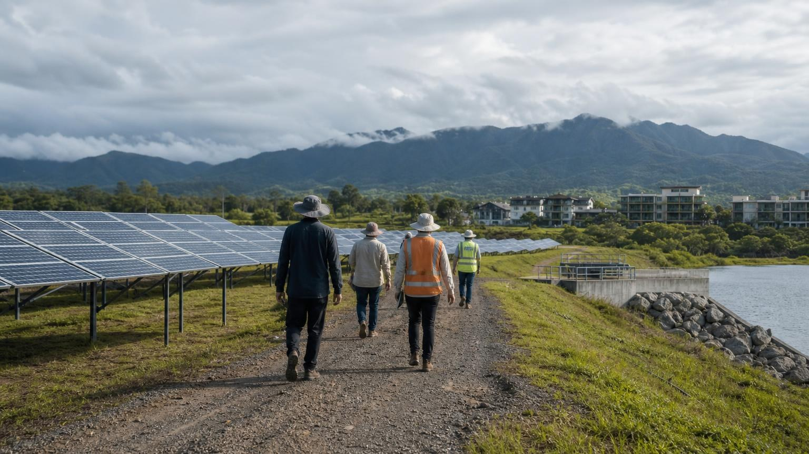

01
SDG Weekly Compass - Week of 2026-11-09
E3G argues that Investor–state dispute settlement (ISDS) provisions are creating growing tensions between investors’ rights and governments’ ability to act…
Climate & EnvironmentGlobal GovernanceEnergy Transition